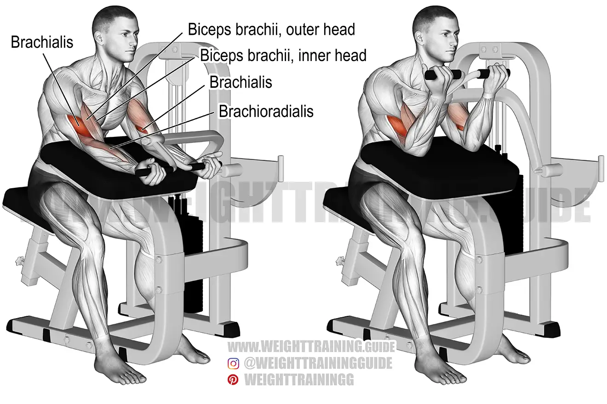

Preacher Curl Machine
Go to bottom
Preacher curls are a popular variation of the traditional biceps curl exercise. They involve using an EZ bar, designed to work the upper arm muscles while reducing strain on the elbows and wrists, along with a preacher pad for a low-impact lifting environment that promotes muscle growth. What sets preacher curls apart is their versatility. While a preacher bench provides an optimal angle for the bicep curl, this exercise can also be performed using a regular inclined bench or an exercise ball. If equipment is limited, alternatives like a preacher curl machine or dumbbells can be used instead of an EZ bar. Preacher curls are considered a single-joint, isolated exercise that effectively targets the biceps and forearms. They offer a focused workout to strengthen and develop these muscle groups, contributing to overall arm strength and aesthetics.

Benefits of the Preacher Curls
- Targeted Bicep Development: Preacher curls specifically target the biceps muscles, helping to build strength, size, and definition in this area. By isolating the biceps, preacher curls allow for focused muscle engagement and enhanced muscle activation.
- Forearm Strength: In addition to the biceps, preacher curls also engage the forearm muscles, particularly the brachialis and brachioradialis. This helps in developing forearm strength and grip, which can be beneficial for various activities and sports.
- Reduced Strain on Joints: The use of an EZ bar or preacher curl pad provides better support and reduces strain on the elbows and wrists compared to traditional biceps curls. This makes preacher curls a suitable option for individuals with joint sensitivities or injuries.
- Form and Technique Focus: Performing preacher curls with proper form and technique is crucial, as it encourages better mind-muscle connection and allows for targeted muscle activation. This attention to form can improve overall lifting technique and reduce the risk of injury.
Muscles Targeted
- Biceps Brachii: The biceps brachii is the main muscle targeted during preacher curls. It is responsible for flexing the elbow joint and contributes to the overall size, strength, and shape of the upper arm.
- Brachialis: The brachialis is a muscle located underneath the biceps brachii. It plays a significant role in elbow flexion and is engaged during preacher curls, contributing to the development of the lower portion of the upper arm.
- Brachioradialis: The brachioradialis muscle is situated in the forearm and assists in elbow flexion. It is activated during preacher curls, helping to support and stabilize the movement.
- Forearm Muscles: While the primary focus is on the biceps, preacher curls also engage the muscles of the forearm, including the flexor muscles in the lower arm. This engagement helps improve forearm strength and grip.
Back to Home